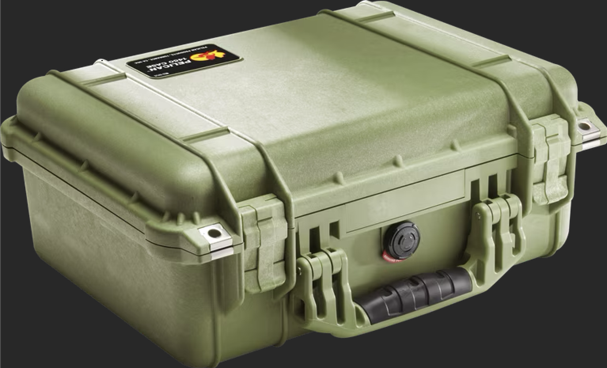

Glossary
A collection of terms and concepts used throughout the site.
Zombie
Zombie - Not just a monster with a rotten face, a zombie is any force destructive to our world. Eater of the planet, the body, the mind, and the spirit.
GPS
GPS (Global Positioning System) - A satellite-based navigation system that provides location and time information anywhere on Earth. ZAC uses GPS combined with offline maps to enable navigation without internet connectivity—satellites don’t care if civilization has collapsed.
Local LLM
Local LLM (Large Language Model) - An AI system that runs entirely on-device, requiring no internet connection. ZAC uses a local LLM to answer questions, assist with survival scenarios, and provide information from its offline knowledge base—all without phoning home to the cloud.
LoRa
LoRa (Long Range) - A low-power, long-range radio communication protocol ideal for off-grid messaging. ZAC uses LoRa via Meshtastic-compatible devices to form mesh networks that can relay messages across kilometers without cellular or internet infrastructure.
Meshtastic
Meshtastic - An open-source mesh networking project that runs on LoRa radio hardware. Enables off-grid text messaging, GPS location sharing, and telemetry between devices over distances of several kilometers. ZAC communicates with any Meshtastic-compatible device, creating decentralized communication networks that don’t rely on cell towers or internet.
Pelican
Pelican - A brand of rugged, watertight, crushproof protective cases originally designed for sensitive equipment. ZAC lives inside a Pelican case to ensure survival in harsh conditions—dust, water, impact, and the general chaos of civilization’s end.
Raspberry Pi
Raspberry Pi - A low-cost, credit card-sized single-board computer developed by the Raspberry Pi Foundation. ZAC is built around the Raspberry Pi 5, chosen for its balance of performance, power efficiency, and widespread availability of replacement parts.

SDR
SDR (Software Defined Radio) - A radio receiver where signal processing is handled by software rather than dedicated hardware. Allows ZAC to monitor aircraft transponders (ADS-B), decode weather satellite imagery, and receive emergency broadcasts using a single USB dongle.
USB
USB (Universal Serial Bus) - A standard connector for peripherals and data transfer. ZAC uses USB ports to connect sensor modules, SDR dongles, storage devices, and other expansion hardware—keeping the system modular and field-serviceable.
Wikipedia
Wikipedia - A free, collaborative online encyclopedia. ZAC carries a compressed offline copy of Wikipedia, providing access to millions of articles without internet connectivity—because knowledge shouldn’t require a working cell tower.
ZAC
ZAC (Zombie Apocalypse Computer) - A resilient, off-grid computing system designed to survive and operate during catastrophic infrastructure collapse. Built with longevity, repairability, and energy independence as core principles.
ZACLOG
ZACLOG - The build series documenting the ZAC project from concept to field-ready system. Each entry covers a specific aspect of the build: hardware assembly, software configuration, testing, and deployment. Follow along via the #zaclog tag.
ZACOS
ZACOS (ZAC Operating System) - The open-source application that powers ZAC. Provides a unified interface for offline AI, mesh communication, radio monitoring, navigation, and environmental sensing. Built to run entirely without internet connectivity.